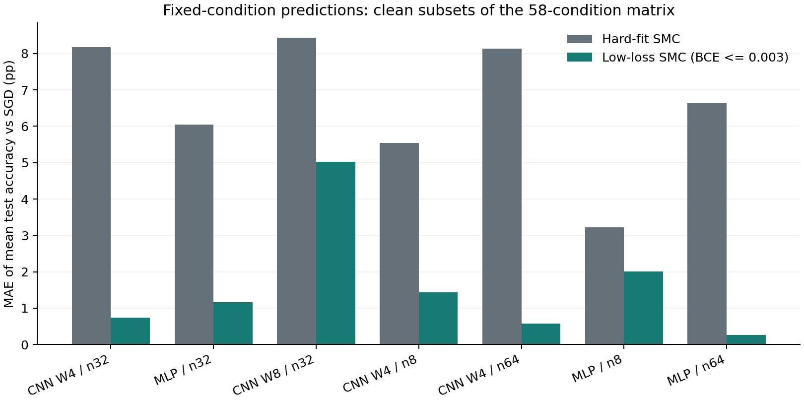
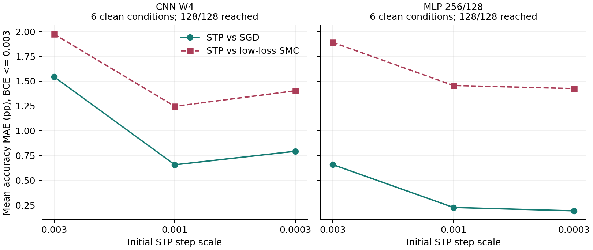
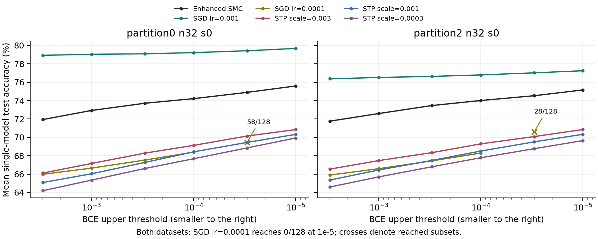

October 2026 update: The original report is retained; jump to the added experiments, checks, and limitations.
The first round is complete. Read the conclusion or the full table first. This is not a reproduction of the full paper; there is only one 16-sample training set.
Running
experiment.py implements training and SMC in one place; the configuration is at the top and there is no argparse. It requires the GPU build of PyTorch, torchvision, and NumPy; the analysis additionally requires Matplotlib. The precheck also depends on the authors' data classes in the upstream directory alongside it, so this round is runnable as a complete directory, not as a ready-made single-file migration package. The default is physical GPU1 RTX3080; see the protocol for all mathematical and sampling settings.
Run from the root of this repository:
& '.venv-gpu/Scripts/python.exe' -E -s -X utf8 research/peleg_static_recheck_20260919/experiment.py
Already-completed conditions are skipped; when the configuration or the main source code changes, the script refuses to overwrite the original results — please specify a new directory. The data reuse the local MNIST cache. Re-running across machines requires modifying the device and data paths and using a new results directory; direct reuse of the local metadata is not promised. No AutoDL migration package has been prepared at present.
endpoint_check.py uses the remainder of the original 120-second budget for at most 512 rounds of fixed-kernel updates; it does not re-estimate K and does not treat snapshots as independent replicas. analyze.py only reads results offline on CPU, using an independent NumPy float64 forward recheck.
results/ preserves data IDs, initial weights, batch permutations, per-epoch training outputs, test outputs at the prescheduled nodes, SGD checkpoints and complete endpoint weights, and SMC checkpoints plus sampled audit weights. upstream/ is the frozen authors' code, used only for cross-checking; its batch training entry point was not run.
The average accuracies shown in the G&C/SMC figures are single-model readings, not ensemble readings. High-coverage BCE matching and confirmation on an independent training set have not yet been completed.
Round-1 Conclusion: After Tightening raw BCE, Static Samples Reach SGD's Test Level
2026-09-19. Completed on the local physical GPU1 RTX3080; the remote 5090 was not used. Document No. 49 and the public paper were not rewritten.
Core Results
A fixed 16-sample MNIST 0/7 training set reconstructed from the authors' public logic, 2008 test images, and a 3/6-width LeNet are used. Weights are initialized from U[-0.2,0.2]; the bias is fixed at 0 for static sampling. Training uses the native two-class CE; the static constraint and the reporting use the equivalent stable raw BCE.
| Condition | Mean single-model/single-particle test accuracy |
|---|---|
| G&C: only requiring all training classifications to be correct | 82.1344% |
| SMC: all training correct and BCE≤0.3 | 93.1083% |
| SMC: all training correct and BCE≤0.1 | 95.0906% |
| SMC: all training correct and BCE≤0.01 | 95.8853% |
| SMC: all training correct and BCE≤0.001, first arrival | 96.3977% |
| Additional 512 rounds of fixed-kernel updates at the same endpoint | 96.3677% |
| SGD: bias fixed at 0, lr=0.01, 60 epochs | 96.3588% |
| SGD: trainable bias, otherwise identical | 96.3589% |
SGD has 512 paired initializations in each case; SMC consists of 4 independent jobs of 1024 particles each, and all jobs start from independent G&C starting points with no SGD warm-up. SMC test labels do not participate in acceptance, target-node, or budget selection. These are averages of single-network accuracies, not ensemble majority-vote scores.
After the additional updates, the individual SMC replicas range from 96.3288% to 96.4150%. There are still 1024 distinct complete test prediction vectors per replica; agreement in average performance must not be misread as the complete function distribution having become a single point, and the presence of diversity likewise does not prove sufficient mixing.
Conclusions that can be supported: in this experiment, G&C filtered only by training classification correctness is clearly below SGD; continuing to tighten raw BCE under the same zero-bias reference measure, the static conditional samples also reach the same test level. Therefore, the original hard-fit control is insufficient to rule out loss-resolved static selection as an explanation of the generalization gap.
This cannot be upgraded to: having overturned all of Peleg's experiments; SGD being equal to static sampling; the complete function probability distributions already being identical; or this holding for all architectures and training sets.
Actual Adjudication of the Two Code Suspicions
Bias Is Not the Main Explanation
The original public code fixes the bias prior at 0, while SGD allows training the bias — this is indeed worth controlling. But in the critical a=0.2, lr=0.01 group, the accuracy of trainable bias minus fixed bias is only about 0.00010 percentage points, with a paired-initialization bootstrap 95% interval of [-0.01352,0.01362] percentage points. Both groups achieve 512/512 all-correct training fits.
This rules out the simple explanation that "the main gap is most likely caused solely by whether the bias is trained"; this attribution can no longer be retained on the basis of the code difference alone.
Learning Rate and Initialization Do Interact
At a=1, lr=0.001 the accuracy is about 86.4% to 86.5%, with the training BCE already extremely low and plateauing early; at a=0.2, lr=0.001 the average is about 93.9% to 94.2%, but some models still have not fully fit; at a=0.2, lr=0.01 all models fully fit and reach about 96.36%.
In the two a=1, lr=0.01 groups, no model fully fits; 83/512 and 95/512 runs in the fixed-bias and trainable-bias groups, respectively, produce non-finite outputs. These are numerical/optimization failure conditions and are not treated as static or generalization counterexamples.
The advantage of small initialization does not disappear because the learning rate is fixed. raw BCE values under different initialization priors cannot be directly compared across settings without reference to the output scale; in particular, an extremely low BCE under large initialization cannot be used to refute the conditional curves of the small-initialization reference measure.
Which Step Is Still Missing for BCE Matching
At the SGD endpoints with fixed a=0.2, lr=0.01, bias=0, an exploratory matching was performed without selecting bins by accuracy. The binning includes all SMC source thresholds, preventing errors caused by directly mixing different conditional distributions.
- log10 bin width 0.1: common support 80/512, i.e., 15.625%. SGD is 96.3521%, SMC after matching is 96.3797%, difference SGD-SMC=-0.02765 percentage points, interval [-0.44399,0.37259].
- Half bin width 0.05: common support 68/512, i.e., 13.281%. SGD is 96.3711%, SMC is 96.3728%.
This is a result from finite binning on the common-support subset, not a strict matched-BCE confirmation over the full SGD population. Between the endpoint nodes 0.003 and 0.001 there is not sufficiently dense intermediate sampling, leaving coverage insufficient. If stronger conclusions are needed in the future, dense nodes should be frozen based on the training BCE distribution and confirmed independently, rather than continuing to select high-test-accuracy points.
The static means before and after the additional endpoint updates are both about 0.000889; the median SGD endpoint BCE is about 0.00116. The two belong to neighboring low-loss regions, but they cannot be called exactly the same loss merely because they are close.
Quality, Time, and Files
- The authors' data selection and normalization agree exactly with the independent reconstruction; the forward pass, gradients, 10-step SGD, and the plain single-model float64 implementation agree to about the 1e-16 level.
- The hashes of the original sampling source code and the authors' files are unchanged. The continued SMC fixed-kernel updates are saved separately and do not overwrite the first round.
- The NumPy float64 recheck covered 72 groups of sampled audit weights, each group nominally containing 16 models and 80 inputs; 4 failed models with non-finite outputs were skipped and recorded. All actual checks showed no classification flips; no observed violations of the SMC training constraint. The maximum absolute logit difference between the valid main conditions and SMC is about 6.08e-6. The failed large-initialization groups separately contain huge values, which were not mixed in as normal error metrics.
- At the deep endpoints, only 5 to 9 initial ancestors remain; high acceptance rates, multiple replicas, and stable continued updates are still not proof of global mixing.
- The 8 conditions comprise 4096 networks in total; the training loops total 20.25 seconds and training-side evaluation 35.28 seconds; the four G&C collections take 29.30 seconds, the initial SMC advancement 206.92 seconds, and the endpoint fixed-kernel updates 81.69 seconds. The main run, including the corresponding disk writes, takes about 6.5 minutes, excluding code writing, prechecks, and offline audits. No training or sampling processes of this experiment are still running.
The first round ends here; no new training sets, width scans, magnitude regularization, or deeper sampling were automatically appended.
- Full analysis report
- Machine-readable summary
- Preregistered protocol
- Main script, no argparse
- Endpoint check
- Independent analysis

2026-10-27 Validation Extension: Correspondence Between Static Conditional Distributions and Training Outcomes
This supplement extends the single-dataset raw-BCE recheck in E36 with the subsequent 58-condition CV matrix, direct Guess & Check (G&C), enhanced SMC, gradient-free STP, and the wide-CNN boundary. It extends the same validation question, does not replace the historical text above, and does not count old experiments as new independent evidence.
Document status: the motivation and protocol account below was assembled on 2026-10-27 as a retrospective explanation based on completed programs, configurations, and results. It is not a formally submitted preregistration from the time of the experiments. The original matrix froze static predictions before running SGD; the bridge condition was not a new blind prediction, and the later sampling checks, step-scale scans, broad STP comparison, and wide-CNN diagnostics are not presented as independent blind predictions either. This round only organized materials, produced figures, and performed lightweight checks; it did not retrain models or run SMC.
1. Motivation and Question
A nonuniform function distribution induced by a parameter prior does not, by itself, explain which functions actual training selects. The question here is: under the same network, training data, and explicitly specified reference measure, does adding continuous training loss to the static condition predict the function predictions of different training methods on unseen inputs more accurately than requiring correct classification alone? The comparison concerns predictions and does not assume identical parameter distributions.
The main task randomly divides the ten MNIST digit classes into two groups of five and assigns binary labels by digit group. This is an arbitrary 5 vs 5 class partition, not iid random labels: all images of the same digit still share a label, and image and digit-class structure remain. Separate controls flip training labels or assign sample-level random balanced labels; the latter fixes equal class counts and is also not unconditional iid Bernoulli labeling. Test labels still follow the original digit partition.
A small training set may not provide enough information to identify the complete digit partition uniquely. These tasks therefore should not be presented as strong demonstrations that very few examples fully specify a natural visual concept. Even when the true partition is not uniquely identifiable, agreement between methods on unseen inputs under the same information-limited training constraints remains testable. Conversely, two methods both approaching 50% accuracy in a random-label control do not automatically establish fine-grained predictive correspondence.
The mechanistic question for STP is whether the gradient updates specific to SGD/Adam are necessary sources of these generalization behaviors. If STP, using only forward-loss comparisons, still yields similar generalization and per-image predictions under the same network, data, and fitting requirements, this weakens explanations attributing those phenomena exclusively to SGD/Adam-specific updates. STP is not a replacement for SMC, and finding low-loss solutions does not measure the static mass of that region.
2. Comparison Targets and Protocol
2.1 Static Events and Training Endpoints
Let the binary logit difference be $d_\theta(x)=z_1(x)-z_0(x)$. For fixed data $D=\{(x_i,y_i)\}_{i=1}^n$, define the mean raw BCE and the event of correct classification on every training example:
The reference measure $\mu$ assigns independent $U[-0.2,0.2]$ weights and fixes biases to zero. Direct G&C independently draws parameters and rejects samples outside $H_D$; hard-fit SMC estimates the same conditional target, whereas low-loss SMC estimates the following cumulative sublevel event:
SMC first reaches hard-fit through a maximum signed-margin violation constraint and then tightens mean BCE. It uses reflection inside the box and a fixed, state-independent mixture of proposal scales. Incorrect logit ties are excluded; correct ties follow the argmax rule. Networks use float32 and constraint scores use float64; neither gradients nor SGD warm starts are used. Preservation of the target measure by a fixed-threshold kernel does not imply that finite particles and finite updates have globally mixed.
SGD starts from the same prior but may leave the initialization box; STP and Adam are likewise not projected back, while SMC remains inside the box. The original matrix checks nodes after each epoch and records the first observed model satisfying hard-fit and crossing the BCE upper bound; subsequent wide-CNN diagnostics check after every update. The first observed endpoint and the full static sublevel set are therefore different distributional objects. A common nominal threshold does not establish exact matching of actual loss.
The original matrix retains both cumulative events and the intervals $0.5\epsilon<L_D\leq\epsilon$ and $0.8\epsilon<L_D\leq\epsilon$. Interval comparisons use the same SGD subset and report retained static counts, the initialization denominator, and the unreached fraction; changing the population is not treated as an improvement. Later STP/wide-CNN analyses also report lower-bound ratios of 0.8 and 0.95. Within-interval loss histograms are not forced to match, and a finite interval is not a measure-zero equal-loss section. All nodes and intervals are retained in the main-matrix node table, STP node data, and wide-CNN deep-node data.
2.2 Matrix, Budgets, and Measurements
The original 34 conditions comprise nine clean n32 conditions and two label controls for each of three networks, plus a CNN W4 bridge condition on 0/7 with n16. The additional 24 conditions combine CNN W4 and MLP, three partitions, two data seeds, and n8/n64; they do not extend the wide CNN. Binary-label-balanced sampling is part of the data distribution, not coverage of every possible training set. Test probes usually contain 2048 images; the 0/7 bridge condition contains 2008.
| Network | Architecture | Parameter slots (including fixed biases) | Original conditions | Additional conditions |
|---|---|---|---|---|
| CNN W4 | Two convolutional layers, channels 12/32, fully connected 512→240→168→2 | 173890 | 12 | 12 |
| MLP 256/128 | 784→256→128→2, ReLU | 234114 | 11 | 12 |
| CNN W8 | Two convolutional layers, channels 24/64, fully connected 1024→480→336→2 | 693378 | 11 | 0 |
Each condition has four SMC pools of 1024 particles and 128 SGD initializations, lr=0.001, batch=2, and at most 2000 epochs; the main nodes are 0.3, 0.1, 0.03, 0.01, and 0.003. Per-level updates/node refreshes are 8/24 in the original matrix and 32/96 in the extension. Across the 58 conditions, all 232 pools reached every main node, and SGD reached every main node in 128/128 initializations. This does not remove G&C shortfalls or unreached nodes in later tasks. See the configurations, dataset identities, and completion records.
Accuracy means the average single-model test accuracy, not majority-vote ensemble accuracy. The following expressions define the cross-condition MAE of mean-accuracy predictions and the within-condition per-image label-frequency MAE, both in percentage points (pp):
Here $S$ is the static ensemble, $T$ is the training ensemble, and $m$ is the number of test probes. Similar per-image marginal frequencies still do not imply the same joint function distribution over all inputs; finite-initialization noise and within-pool correlations also affect error estimates. The 4096 particles across four pools must not be treated as 4096 independent replicates.
3. Results Across 58 Conditions
The clean subsets below are compared at nominal BCE≤0.003. The numbers are errors in predicting SGD's mean test accuracy, not the models' classification error rates. Each of the first three rows contains nine conditions, and each of the four additional rows contains six; controls are not mixed into clean averages to change the comparison population.
| Network and data | Conditions | Hard-fit SMC MAE (pp) | Low-loss SMC MAE (pp) | Per-image frequency MAE (pp) |
|---|---|---|---|---|
| CNN W4, original n32 | 9 | 8.18 | 0.74 | 4.93 |
| MLP, original n32 | 9 | 6.05 | 1.16 | 5.26 |
| CNN W8, original n32 | 9 | 8.43 | 5.02 | 8.78 |
| CNN W4, additional n8 | 6 | 5.54 | 1.43 | 5.05 |
| CNN W4, additional n64 | 6 | 8.13 | 0.58 | 4.06 |
| MLP, additional n8 | 6 | 3.23 | 2.01 | 5.32 |
| MLP, additional n64 | 6 | 6.63 | 0.26 | 3.88 |
Continuous-loss conditioning substantially improves the hard-fit baseline for the small CNN and MLP. The wide CNN also improves, but 5.02 pp remains a substantial discrepancy. Predictions of mean accuracy are closer in the additional n64 conditions, but n8/n64 alone cannot establish a universally monotonic decline in error with sample size. Per-image frequency errors around 4 pp can coexist with very small mean-accuracy errors. Per-condition values, loss quantiles, and pool information are available in the 58-condition data and readable CSV.

All six label controls are retained. The table reports mean accuracy for partition0, seed0, n32. “Flipped” changes one quarter of the training labels only; “random balanced” randomizes training labels only, not test labels.
| Network | Label control | Hard-fit SMC (%) | Low-loss SMC (%) | SGD (%) | Per-image frequency MAE (pp) |
|---|---|---|---|---|---|
| CNN W4 | Flipped | 58.83 | 64.81 | 64.72 | 7.72 |
| CNN W4 | Random balanced | 52.46 | 52.21 | 53.19 | 6.19 |
| MLP | Flipped | 57.67 | 62.31 | 61.40 | 8.49 |
| MLP | Random balanced | 51.82 | 52.05 | 52.30 | 7.40 |
| CNN W8 | Flipped | 59.48 | 61.45 | 65.55 | 11.45 |
| CNN W8 | Random balanced | 51.40 | 52.13 | 53.07 | 7.70 |
Accuracy in the random-balanced controls is near chance, so similar means alone are not strong confirmation; the wide-CNN flipped condition retains a substantial gap. The 0/7 bridge condition gives 82.28%, 93.15%, and 92.85% for hard-fit, low-loss SMC, and SGD, respectively. These belong to this round's CNN W4 and lr=0.001 protocol, not the earlier narrower-network, lr=0.01 protocol above.
4. Direct G&C and Enhanced-Sampling Calibration
Direct G&C ultimately obtained sufficient samples in more than the initial bridge condition: the bridge plus all twelve n8 conditions yield 13 conditions with 512 independent accepted samples each. The other 45 conditions have zero hits within budget; SMC particles are not substituted for independent rejection samples in those conditions. Actual draws, accepted counts, hit counts, elapsed times, and terminal states are retained in the 58-condition G&C records and CSV.
| Condition category | Conditions | Direct G&C accepted samples per condition | Interpretation |
|---|---|---|---|
| CNN W4, 0/7 bridge | 1 | 512 | Sufficient direct rejection samples |
| CNN W4/MLP, additional n8 | 12 | 512 | Sufficient direct rejection samples |
| Original n32 and additional n64 | 45 | 0 | Budget limitation, not zero mass or zero accuracy |
Across the twelve n8 conditions, the mean-accuracy MAE between hard-fit SMC and direct G&C is 0.119539 pp, approximately 0.120 pp; the thirteen-condition calibration table retains every difference. Original wide-CNN draws range from 1304448–1314432, rather than all conditions exhausting 2000000 draws. Zero hits within budget show that direct rejection sampling is expensive, not that the target is infeasible. Hard-fit calibration on easier conditions is not proof of adequate deep-tail SMC mixing.
The regular/enhanced check completed three conditions×two budgets×four pools, totaling 24 pools. The regular tier uses 1024 particles and 8/24 updates/refreshes; the enhanced tier uses 2048 particles and 32/96. The target, data, network, and reference box are unchanged, and original SGD is not retrained. Complete BCE≤0.003 results follow; the K range is the maximum minus the minimum across the four pools:
| Condition | Tier | SMC (%) | Original SGD (%) | Absolute accuracy gap (pp) | K range (bit) |
|---|---|---|---|---|---|
| CNN W4, 0/7 n16 | Regular | 93.021 | 92.846 | 0.175 | 1.245 |
| CNN W4, 0/7 n16 | Enhanced | 93.071 | 92.846 | 0.225 | 0.514 |
| CNN W4, partition0 seed1 n32 | Regular | 76.589 | 77.362 | 0.773 | 7.517 |
| CNN W4, partition0 seed1 n32 | Enhanced | 75.888 | 77.362 | 1.474 | 2.326 |
| MLP, partition0 seed0 n32 flipped | Regular | 63.484 | 61.402 | 2.082 | 4.757 |
| MLP, partition0 seed0 n32 flipped | Enhanced | 63.673 | 61.402 | 2.271 | 3.266 |
The between-pool K range decreases, but none of these three conditions becomes closer to SGD at this node after increasing the budget. Improved repeatability is not disappearance of prediction error, much less exact convergence of absolute volume. The 24-pool check data also retain other nodes, finite-interval counts, and all pool values.
5. STP: Testing Whether Gradient Updates Are Necessary
STP compares the current parameters with positive and negative perturbations along the same random direction and accepts only a candidate with lower forward training loss. Biases remain zero, test labels do not select updates, and no explicit gradients are used. The step scale decays as $\sigma_t=\sigma_0/\sqrt{1+t/2000}$, with $t$ starting at zero. It is a greedy search with optimization bias, does not preserve the static conditional measure, and cannot estimate volume by counting endpoints. It is not proposed here as a faster training algorithm.
The early exploratory four-scale scan on the small 0/7 network uses the same 128 initializations; every row below reaches 128/128. The scan followed the known first-round discrepancy, so the best-matching scale is not independent confirmation. Within the 58-condition matrix, the CNN W4 bridge uses a different network/learning-rate protocol. Full actual losses, narrow-band counts, and paired intervals are retained in the early step-scale data.
| BCE upper bound | Initial scale | STP (%) | SGD (%) | SMC (%) | Actual STP mean BCE |
|---|---|---|---|---|---|
| 0.003 | 0.01 | 94.821 | 96.276 | 96.248 | 0.0026455 |
| 0.003 | 0.003 | 95.760 | 96.276 | 96.248 | 0.0029229 |
| 0.003 | 0.001 | 96.054 | 96.276 | 96.248 | 0.0029791 |
| 0.003 | 0.0003 | 96.206 | 96.276 | 96.248 | 0.0029961 |
| 0.001 | 0.01 | 94.960 | 96.314 | 96.398 | 0.0008846 |
| 0.001 | 0.003 | 95.846 | 96.314 | 96.398 | 0.0009727 |
| 0.001 | 0.001 | 96.146 | 96.314 | 96.398 | 0.0009911 |
| 0.001 | 0.0003 | 96.282 | 96.314 | 96.398 | 0.0009985 |
At the smallest scale, the STP−SGD gap at 0.003 is approximately −0.070 pp, but pushing the large-scale run to lower loss does not remove its discrepancy. Changing the scale changes the path, not just computation time; the result cannot be summarized as “running longer necessarily becomes equivalent to SMC.”
The broad comparison covers CNN W4 and MLP, each with six clean conditions from three partitions×two data seeds, plus two label controls, totaling 16 conditions×three scales＝48 groups, each with 128 initializations and five BCE nodes. Predictions are saved for all 240 job nodes, with 128/128 reached at every node. Clean-condition summaries at BCE≤0.003 follow; the full-node JSON and CSV retain every scale, control, actual loss, and interval count.
| Network | Initial scale | Clean conditions | STP–SGD accuracy MAE (pp) | STP–low-loss SMC accuracy MAE (pp) |
|---|---|---|---|---|
| CNN W4 | 0.003 | 6 | 1.543 | 1.973 |
| CNN W4 | 0.001 | 6 | 0.656 | 1.246 |
| CNN W4 | 0.0003 | 6 | 0.793 | 1.403 |
| MLP | 0.003 | 6 | 0.658 | 1.891 |
| MLP | 0.001 | 6 | 0.226 | 1.456 |
| MLP | 0.0003 | 6 | 0.192 | 1.424 |

At the smallest scale, STP–SGD MAE across six clean conditions is 0.793 pp for CNN and 0.192 pp for MLP; the intermediate scale is actually closer for CNN, so scales must not be selected retrospectively by agreement with SMC or SGD. Methods still differ in actual loss and per-image frequencies; similar mean accuracy is not equality of the full function distribution. Broad STP was a robustness check with configurations fixed after the SMC/SGD results were known, not a new fully blind prediction.
These results support the statement that SGD/Adam-style gradient updates are not necessary for similar generalization in the tested conditions and support a role for shared static structure imposed by architecture, data, and continuous precision constraints. They do not prove static volume to be the sole cause. STP may still share geometric preferences with gradient methods, and optimizers may change function-selection probabilities rather than only the speed of reaching solutions.
6. The Wide-CNN Protocol Boundary
6.1 Enhanced SMC and Deep Loss
For each of two original training sets, partition0/partition2, seed0, n32, four enhanced pools of 2048 particles completed, using 32 per-level updates and 96 node-refresh updates down to BCE≤1e-5. The two local and two cloud pools for partition0 were combined after checking identical data, models, and scientific settings; checkpoints were not spliced across hardware. Partition2 has four cloud pools. The final SGD/STP runs use a new independent initialization cohort with seed offset=1000000 and must not be directly paired with the old local trajectories by matching identifiers.
| Training set | Original SMC, BCE≤0.003 (%) | Enhanced SMC, BCE≤0.003 (%) | Enhanced SMC, BCE≤1e-5 (%) |
|---|---|---|---|
| partition0 | 71.54 | 71.94 | 75.59 |
| partition2 | 70.92 | 71.77 | 75.16 |
At the deepest node below, SMC is the equal-weight mean of four pools, and every listed optimizer group reaches 128/128. The unreached smaller-learning-rate SGD results are listed separately, not inserted as 0% accuracy.
| Method, BCE≤1e-5 | partition0 (%) | partition2 (%) |
|---|---|---|
| Enhanced SMC | 75.59 | 75.16 |
| SGD lr=0.001 | 79.68 | 77.25 |
| STP scale=0.003 | 70.85 | 70.85 |
| STP scale=0.001 | 70.33 | 70.33 |
| STP scale=0.0003 | 69.93 | 69.65 |
| Node for SGD lr=0.0001 | partition0 reached | partition2 reached | Interpretation |
|---|---|---|---|
| 1e-4 | 128/128 | 128/128 | Accuracies are 68.39% / 68.29%, respectively |
| 3e-5 | 58/128 | 28/128 | Reached subsets only |
| 1e-5 | 0/128 | 0/128 | Unreached within the budget/step limit after 4000 epochs and 64000 updates |
The SGD lr=0.001 gaps from SMC decrease from the 0.003-node values of approximately 6.99/4.60 pp to the 1e-5-node values of approximately 4.08/2.09 pp, but do not disappear. At the deepest node, actual mean BCE is approximately 9.2e-6/9.4e-6 for SGD and 6.8e-6/7.0e-6 for SMC; SGD's higher accuracy therefore cannot be attributed here to reaching a lower mean loss. Complete data are in the deep-node JSON and CSV.

At 0.003, enhanced-pool accuracy standard deviations are approximately 0.068/0.371 pp; at 1e-5 they are approximately 0.255/0.177 pp. Historical audits recomputed survival accounting over 488 levels in eight pools; for 160 sampled sets of node parameters, float64 standard-layer forward evaluation differed in training BCE by at most 4.51e-7, with no differences in 10240 test prediction bits. These historical implementation and accounting checks were not rerun in this round and do not establish global mixing or absence of shared systematic bias.
6.2 Optimizers, the Last Step, and Data Composition
The Adam probe has four groups of 16 initializations, totaling 64 trajectories, all reaching 0.001; it must not be treated as a formal 128-initialization comparison. The table compares the actual first landing below 0.003 with read-only interpolation along the final threshold-crossing update segment. For partition0/partition2, original SMC accuracy is 71.54%/70.92%.
| Training set | Adam lr | Actual landing (%) | Interpolated point (%) | Interpolated mean BCE | Actual landing at 0.001 (%) |
|---|---|---|---|---|---|
| partition0 | 0.0001 | 70.17 | 69.89 | 0.00299767 | 70.65 |
| partition0 | 0.001 | 82.87 | 82.58 | 0.00299743 | 83.61 |
| partition2 | 0.0001 | 72.48 | 72.51 | 0.00299732 | 72.68 |
| partition2 | 0.001 | 79.54 | 79.22 | 0.00299727 | 79.56 |
Every interpolated point meets the 0.2% relative-loss tolerance, while accuracy changes by only about 0–0.3 pp. Thus, merely crossing the threshold on the final update does not explain the main discrepancy. Approximately 1%–3% of test labels still change, and interpolation neither replays the earlier path nor alters subsequent Adam state; it is not static conditional sampling. Separation between learning rates remains at 0.001. Detailed data and threshold-crossing records are in the Adam data.
Separate local data-composition interventions compare two 0/1 data seeds and partition0 at n16/n64. All entries below are at BCE≤0.003, with 128/128 optimizer initializations reaching the node; each SMC entry uses four pools of 1024 particles. These are reported separately from the new cloud initialization cohort in the previous subsection.
| Data | SMC (%) | SGD lr=0.001 (%) | SGD lr=0.0001 (%) | STP scale=0.001 (%) |
|---|---|---|---|---|
| pair01 n32 seed0 | 97.497 | 99.238 | 94.923 | 93.915 |
| pair01 n32 seed1 | 97.195 | 98.920 | 93.557 | 92.860 |
| partition0 n16 seed0 | 66.803 | 72.798 | 60.712 | 60.093 |
| partition0 n64 seed0 | 78.400 | 83.827 | 73.643 | 72.680 |
Easier tasks do not make all protocols coincide. If even the hard-fit baseline is highly accurate on 0/1, high accuracy alone cannot be credited to low-loss SMC. Actual loss, hard-fit/G&C baselines, and other nodes are retained in the local diagnostic data. Unmatched actual losses and permission to leave the initialization box should be documented, but without causal interventions none of these factors can be declared to have explained the discrepancy.
6.3 What This Boundary Means
The wide CNN cannot be summarized as all actual optimizers agreeing while only SMC is wrong: SGD, Adam, STP, and different step scales themselves differ substantially, and one static distribution cannot exactly equal all these different distributions simultaneously. Conversely, optimizer disagreement does not cancel the prediction error under a specified protocol. This is an optimizer-protocol-sensitive boundary of applicability, not a declaration that the entire static picture is invalid, nor that the discrepancy has disappeared or been fully explained.
7. Supported Conclusions
Across multiple fixed small-data conditions, low-loss static distributions predict actual training more accurately than hard-fit conditioning alone, and similar generalization is not confined to one gradient-based optimization method. STP adds a control for testing whether a particular update mechanism is necessary, but it is not a volume estimator and does not establish shared static structure as the sole cause. The evidence comes from nontrivial predictions, per-image measurements, and multiple interventions, not from describing the task as a fully specified natural rule.
Applicability is limited by the network, data, reference measure, optimization protocol, actual loss distributions, finite initializations, and sampling precision. Enhanced sampling cannot automatically eliminate systematic error; low reach rates cannot be filled in as full-population results; near-chance means in random controls cannot serve as fine-grained confirmation; and wide-CNN discrepancies must be retained alongside positive results. This supplement does not derive a theorem equating every optimizer distribution with static sampling.
8. Public Reproduction Materials and Entry Points
All added programs are in extension_20261027. The source manifest preserves the original-byte SHA-256 hashes of fifteen historical scientific-code files. For files that need separation from old queues, the local loader selects original AST functions/constants without rewriting scientific function bodies or executing old paths, private-archive loading, or historical main functions. Runtime does not depend on scripts outside the framework, private ZIP files, or old checkpoints; official MNIST and the public seeds/dataset manifests reconstruct the data and verify array hashes.
From the original experiment directory, use Python with matching PyTorch/torchvision installations. Dependencies include NumPy, PyTorch, torchvision, Matplotlib, and the other entries in requirements.txt. First run the following read-only or offline commands. By default, reproduce.py sets TASK="inspect" and RUN_COMPUTE=False, so it does not download data, train, or sample.
python -E -s -B extension_20261027/validate_package.py
python -E -s -B extension_20261027/summarize.py
python -E -s -B extension_20261027/reproduce.py
Only when explicitly preparing an expensive reproduction should the top configuration in reproduce.py be edited: TASK, RUN_COMPUTE, DEVICE, OUTPUT_NAME, and the time budget. GPU subtasks require explicit CUDA and never silently fall back to CPU; the Adam probe retains its historical CPU protocol. Outputs are confined to runs/ inside the new subdirectory. Historical result directories must not be reused, and different scientific configurations must not be mixed. Time limits are operational budgets; unfinished runs retain terminal records/checkpoints, with no promise of completion in one invocation.
| TASK | Subtask | Scientific scale and notes |
|---|---|---|
| cv34 | Original matrix: G&C, SMC, frozen predictions, SGD | 34 conditions; four pools×1024; 128 initializations |
| cv24 | Sample-size extension | 24 conditions; four pools×1024; 32/96 updates/refreshes |
| recheck | Regular/enhanced static recheck | Three conditions×two tiers×four pools; no SGD retraining |
| anchor_steps | Early 0/7 step-scale scan | Four scales×128 STP; paired SGD; separate from the large-matrix bridge |
| stp48 | Broad gradient-free comparison | 16 conditions×three scales×128; at most 50000 steps |
| wide_data | Wide-CNN data-composition interventions | Four data conditions, each with four pools and three training settings |
| wide_deep | Enhanced wide CNN and deep-node training | Eight pools and ten optimizer groups over two data conditions; independent seed cohort |
| adam | Small-sample Adam and threshold-crossing interpolation | Two data conditions×two learning rates×16; not a substitute for the formal initialization count |
JOB_IDS can split STP/wide-CNN jobs; the main matrix retains its frozen full design. Full reproduction requires downloading MNIST and substantial GPU time and storage, with wide-CNN particle budgets especially demanding in memory. Dtype or scientific budgets must not be reduced to claim a completed reproduction. The public package contains no large raw-image datasets, parameter particles, training checkpoints, or temporary outputs. The evidence manifest maps public data files to historical source hashes, so the text does not depend on working drafts or private download links.
9. Checks in This Round and Limitations
Checks in this round include py_compile for all Python files, frozen-source hashes, actual local imports, lightweight model-forward consistency, record counts for 58 conditions/13 sufficient G&C conditions/45 zero-hit conditions/48 STP groups, recomputed tables, and Chinese–English structural and link correspondence. Results are saved in the validation record. Figures are generated from public historical values by the offline script, using English axis labels shared by both languages.
The current GPU virtual environment's Python launcher fails while importing _ctypes. Lightweight checks instead use the same-version system Python launcher with the installed GPU-environment dependencies; no environment was installed or modified. This does not certify long GPU tasks, bitwise cross-device reproduction, or SMC mixing. Offline recomputation uses public scalar and node summaries, not a fresh read of every original prediction matrix or a new forward audit of all historical particles. Full raw predictions require running the corresponding subtask. This round ran no long experiments, retraining, or sampling, and made no commit or push; website build integration is handled separately.